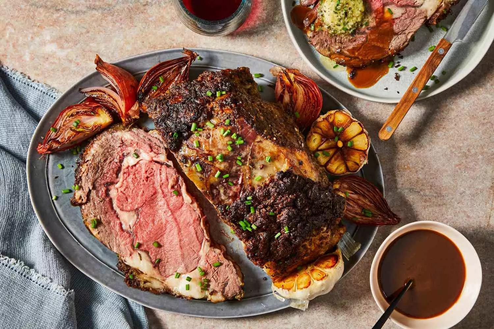
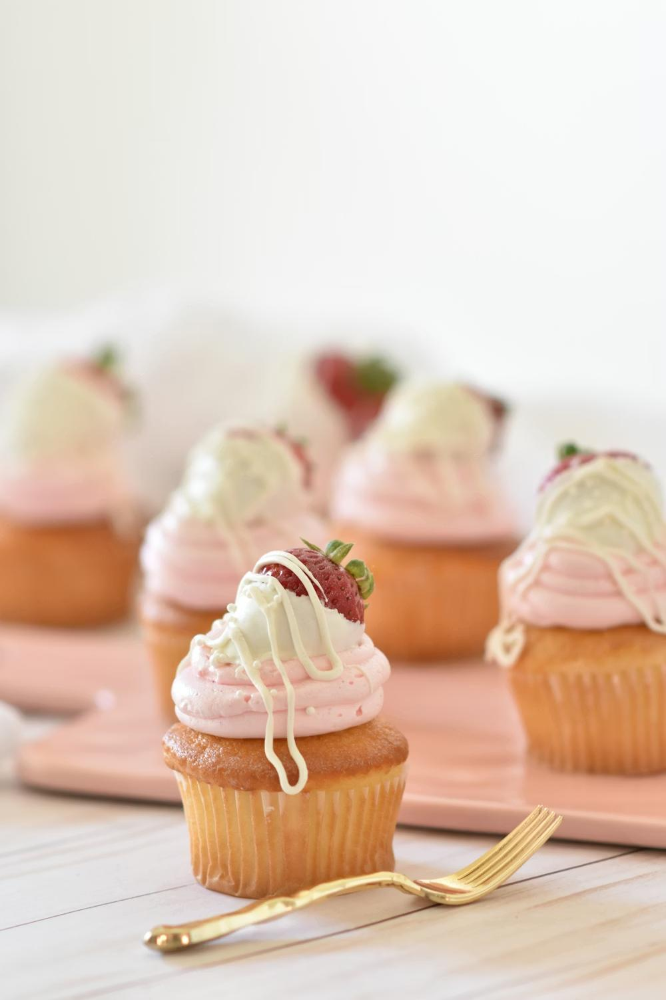

Món Khai Vị
Appetizer (món khai vị) là món ăn hoặc đồ uống nhỏ, nhẹ nhàng phục vụ trước bữa chính nhằm kích thích vị giác...

Món Chính
Main course (món chính) là phần quan trọng nhất, thịnh soạn nhất trong một bữa ăn nhiều món...

Món Tráng Miệng
Món tráng miệng là món ăn ngọt hoặc nhẹ được dùng sau bữa ăn chính...
